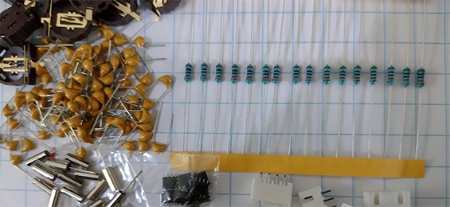
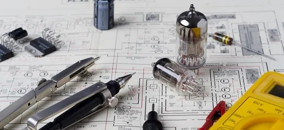
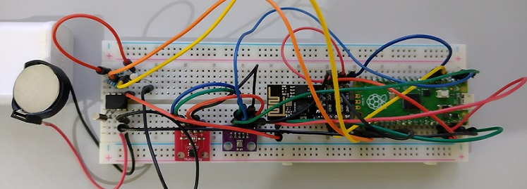
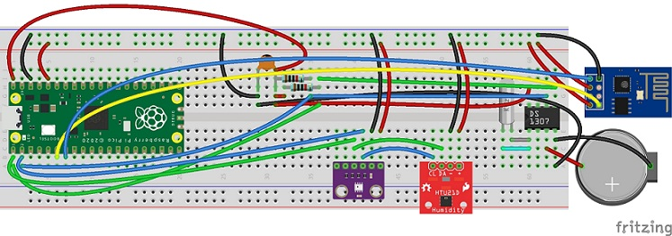
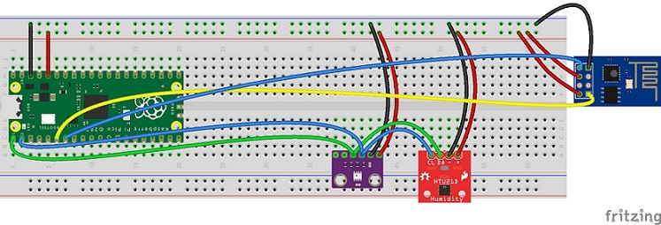

Estação meteorológica experimental usando Raspberry Pi Pico
Sobre
As mudanças climáticas são um dos maiores desafios da humanidade!
Para a agricultura, que é totalmente dependente do clima, qualquer alteração pode trazer problemas para o desenvolvimento das plantas e a criação de animais, e, consequentemente, para a produção de alimentos.
Assim, este é um projeto de uma estação meteorológica experimental de baixo custo com o objetivo de disseminar a tecnologia usada, tornando-a acessível para a comunidade de estudantes, pesquisadores e hobistas. Podendo assim, colaborar para a redução dos impactos negativos provocados pelo clima, tornando uma ferramenta importante para ajudar os produtores a enfrentar os desafios das mudanças climáticas. Para atingir esse objetivo ela será open-software e open-hardware.
News
- Foi anunciando um novo modulo, o Raspberry Pi Pico W, com wifi integrado. O projeto será remodelado, para reduzir o seu tamanho e diminuir custos.
28/05/2022 - Inspecionando componentes.
21/05/2022 - Formatando o projeto no método DIY, para pode ser montado sem a ajuda direta de especialistas ou profissionais.
14/05/2022 - Estudando sobre open-hardware e os requisitos para certificar o projeto.
07/05/2022 - Representação esquemática da placa pcb que vai os componentes. Os sensores serão conectados em conectores JST. Clique na imagem para abrir.
30/04/2022 - Realizado encomenda dos componentes finais para medição e identificar com precisão as localizações dos componentes.
23/04/2022 - Iniciado projeto no Autodesk Eagle, para criação do circuito impresso, diagrama esquemático e roteamento de PCB.
21/04/2022 - Imagem dos circuitos elétricos montados em uma protoboard. Os componentes usados no RTC estão detalhados abaixo.
16/04/2022 - Imagem da montagem de circuitos elétricos experimentais com RTC.
09/04/2022 - Encomendado os componentes para criação de um RTC.
02/04/2022 - Criado a imagem da montagem de circuitos elétricos experimentais.
26/03/2022 - Criado o código do software em MicroPython para comunicação com os sensores e o site https://www.wunderground.com/dashboard/pws/IUBERA9
19/03/2022 - Fixados componentes de temperatura, pressão do ar e umidade na protoboard.
12/03/2022 - Realizada solda dos pinos de componentes.
05/03/2022 - Encomendado os componentes iniciais para a criação de uma estação meteorológica pessoal.
Design em Fritzing v2 - raspberry_pi_pico_v2.fzz 88,1 KB
Design em Fritzing - raspberry_pi_pico.fzz 83,5 KB
- Raspberry Pi Pico
- Sensor HTU21D
- Sensor BMP280
- Módulo WiFi ESP8266 ESP-01
- Fonte 5v Micro-USB
- RTC
- CI DS1307
- Cristal 32.768KHz
- Resistor 10KΩ
- Resistor 10KΩ
- Capacitor 0.1uF
- Bateria CR2032